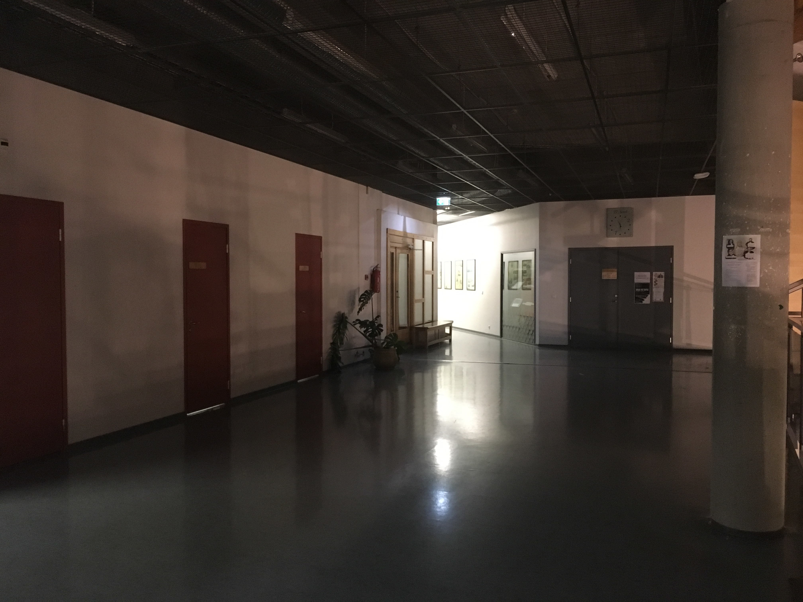

| Koduleht | Picross | Kadedus | Rand | Minust |
|---|
Ma astusin mööda looklevaid koridore. Ustel oli taaskord näha mitmesuguseid keelavaid silte. Eriti köitis mu tähelepanu silt, mis keelas millegipärast alkoholi sisseviimise. Kaugusest oli ikka kuulda Mozarti reekviemi, mis mööda koridori seinu kõhedalt vastu kajas. Järsku pööras koridor paremale ning jätkasin teed mööda kergelt allapoole kaldus põrandat. Kaugusest kostev muusika jäi edasi minnes aina vaiksemaks ning iga sammuga tajusin, kuidas koridori seinad natuke justkui koomale tõmbusid, lämmatades mind oma rõskuse ja raskusega. Mind valdas paanika ning kiirendasin oma sammu, kuni lõpuks jõudsin kergelt praokil oleva rohelise ukseni, mille kerge valgusvihk mind sisse kutsus nagu see maja mind eelnevaltki kutsunud oli.
See oli kõigest esimene lõik veidi pikemast loost. Ülejäänud loo lugemiseks kontakteeruda ühega autoritest.
| Autor | Panus |
|---|---|
| Andriin | Mõtles välja lõpu. |
| Kertu | Mõtles välja toa ja tegelase. |
| Marelle | Aitas teksti sõnastamisega ja tegi parandusi. |
| Rebecca | Mõtles välja dialoogid. |
| Janar | Aitas teksti sõnastamisega ja tegi parandusi. |